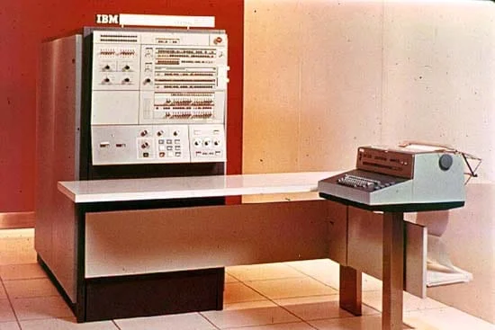

• A principios de los años 60, la industria informática experimentó un cambio radical gracias a la invención del circuito integrado (chip), desarrollado por Jack Kilby (Texas Instruments, 1958) y Robert Noyce (Fairchild Semiconductor, 1959). • El circuito integrado permitió colocar varios transistores y componentes electrónicos en una sola pieza de silicio, reduciendo drásticamente el tamaño y aumentando la fiabilidad. • La computación comenzó a expandirse más allá de los grandes centros de datos, llegando a empresas medianas, instituciones educativas y gobiernos locales. • Se empezaron a estandarizar arquitecturas y familias de computadoras que podían compartir programas y periféricos.
•Circuito integrado: miniaturización masiva de componentes. Compatibilidad: familias de computadoras que permitían usar el mismo software en diferentes modelos. • Interactividad: ya no era necesario esperar horas para obtener resultados; se podían dar comandos y recibir respuestas rápidas. 
1. Tecnología base: Circuitos integrados (ICs) que integraban múltiples transistores y componentes en un solo chip. 2. Tamaño y diseño: Más compactas y eficientes que las de segunda generación. 3. Velocidad: Operaciones medidas en nanosegundos. 4. Consumo de energía: Mucho más bajo que en generaciones anteriores. 5. Memoria: Núcleos magnéticos más rápidos y, posteriormente, memorias de semiconductores.